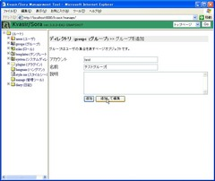

Seasar Kvasir/Sora
ユーザ・グループ・ロールの追加
ユーザを追加する
Kvasir/SoraではユーザもPageオブジェクトの一種ですので、 ユーザを追加するにはPageオブジェクトツリーにユーザオブジェクトを追加することになります。
ユーザオブジェクトは通常/usersディレクトリ以下に配置します。 ツリーペインで/usersディレクトリをクリックして詳細ペインに一覧画面を表示して下さい。 「追加するものを選択...」と書かれているドロップダウンリストから「ユーザ」を選択すると、 ユーザの追加フォームが表示されます。
追加したいユーザのアカウント、名前、説明を入力して「追加」ボタンを押して下さい。 追加してから編集する場合は「追加して編集」ボタンを押して下さい。 ここでは、アカウントに「test」、名前に「テストユーザ」と入力してみます。
追加したユーザのパスワードはデフォルトでは空になっています。 Kvasir/Soraではパスワードが空のユーザはログインできないため、 追加後に基本項目タブでパスワードを設定して下さい。 パスワードとしては大抵の半角文字が使用できますが、次のパスワードは特別な意味を持ちます。
- *
- 任意のパスワード文字列にマッチします。
- （空文字列）
- どのパスワード文字列ともマッチしません。
グループを追加する
Kvasir/SoraではグループもPageオブジェクトの一種ですので、 グループを追加するにはPageオブジェクトツリーにグループオブジェクトを追加することになります。
グループオブジェクトは通常/groupsディレクトリ以下に配置します。 ツリーペインで/groupsディレクトリをクリックして詳細ペインに一覧画面を表示して下さい。 「追加するものを選択...」と書かれているドロップダウンリストから「グループ」を選択すると、 グループの追加フォームが表示されます。

追加したいグループのアカウント、名前、説明を入力して「追加」ボタンを押して下さい。 追加してから編集する場合は「追加して編集」ボタンを押して下さい。 ここでは、アカウントに「test」、名前に「テストグループ」と入力してみます。

作成したグループに先ほど追加したユーザ「test」を追加してみましょう。 /groups/testの詳細画面を詳細ペインに表示して、ユーザ設定タブをクリックして下さい。 このグループに所属させたいユーザ(今の場合は/users/test) をリストボックスで選択状態にして「変更を保存」ボタンを押して下さい。
ロールを追加する
Kvasir/SoraではロールもPageオブジェクトの一種ですので、 ロールを追加するにはPageオブジェクトツリーにロールオブジェクトを追加することになります。
ロールオブジェクトは通常/rolesディレクトリ以下に配置します。 ツリーペインで/rolesディレクトリをクリックして詳細ペインに一覧画面を表示して下さい。 「追加するものを選択...」と書かれているドロップダウンリストから「ロール」を選択すると、 ロールの追加フォームが表示されます。
追加したいロールのアカウント、名前、説明を入力して「追加」ボタンを押して下さい。 追加してから編集する場合は「追加して編集」ボタンを押して下さい。 ここでは、アカウントに「test」、名前に「テストロール」と入力してみます。
作成したロールを先ほど追加したユーザ「test」に割り当ててみましょう。 /user/testの詳細画面を詳細ペインに表示して、ロール設定タブをクリックして下さい。 このユーザに割り当てたいロール(今の場合は/roles/test)をリストボックスで選択状態にして 「変更を保存」ボタンを押して下さい。